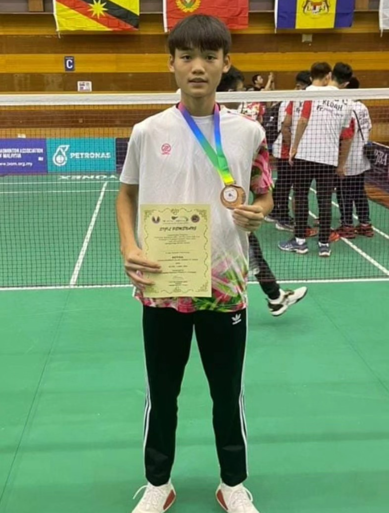

Description: Despite a challenging start, Emilia's unwavering determination propelled her through each match of the championship. With resilience as her shield and skill as her sword, she faced formidable opponents head-on, refusing to falter in the face of adversity. In a pivotal moment, amidst a crescendo of anticipation, Emilia unleashed a powerful shot that clinched the gold medal. The arena erupted in thunderous applause, celebrating not just her victory, but the triumph of perseverance and belief in the face of daunting odds. Through her journey, Emilia proved that with relentless determination and unwavering resolve, even the toughest challenges can be conquered, leaving an inspiring legacy for all who dare to dream.
Sea Games
2nd Place doubles ~ Emilia Gaukings & Skylar White ~ 2023
Description: In their debut at the local badminton tournament, Emilia and Skylar, newcomers to the sport, entered the bustling arena with determination and eagerness. Despite facing opponents with far more experience, they approached each match with undeterred enthusiasm, fueled by their passion for badminton and a desire to improve. As the tournament progressed, Emilia and Skylar engaged in intense rallies and thrilling exchanges, showcasing their growing confidence and adaptability on the court. Though victory remained elusive, their journey from newcomers to contenders symbolized their dedication and willingness to push beyond their limits in pursuit of excellence, leaving behind a legacy of passion and perseverance for others to follow.

ASEAN Games
3rd Place Singles ~ Justin Tan ~ 2021
Description: In the midst of the intense tennis championship, Justin encountered numerous formidable adversaries that threatened her aspirations for victory. Despite the initial hurdles, Justin's resolve remained unshaken, driven by an unwavering determination to excel. Match after match, she displayed remarkable resilience and skill, showcasing her unwavering commitment to success. As the championship approached its climax, Emily found herself in a pivotal moment, with the pressure mounting. With steely determination, Emily delivered a powerful serve that secured her the second-place title. The stadium erupted in applause, acknowledging Emily's triumph over adversity and his unyielding self-belief. Through his journey, Justin exemplified that with perseverance and determination, one can overcome even the most daunting challenges, inspiring others to pursue their ambitions with unwavering courage and resolve.
Selangor Open
2nd place doubles ~ Mikael Judran & Ricardo Smith ~ 2024
Description: In their inaugural venture into competitive badminton, Mikael and Ricardo, newcomers to both the badminton club and tournament scene, eagerly entered the Selangor Open, their hearts brimming with excitement and nerves. Despite their lack of experience, they faced seasoned adversaries with determination and grit, showcasing their budding skills and unwavering resolve with every swing of the racket. Though victory remained elusive, their journey from novices to competitors in one of badminton's esteemed tournaments symbolized their commitment to embracing challenges and their passion for the sport. As they departed the court, heads held high and smiles of pride on their faces, Mikael and Ricardo knew they had embarked on an exhilarating journey in the world of competitive badminton, leaving behind a trail of inspiration for future endeavors.